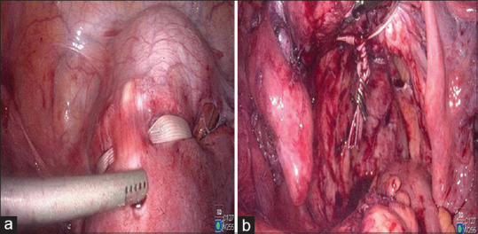
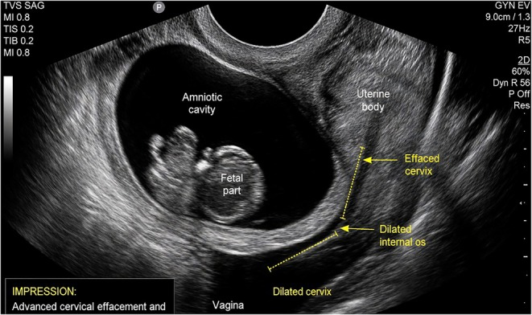
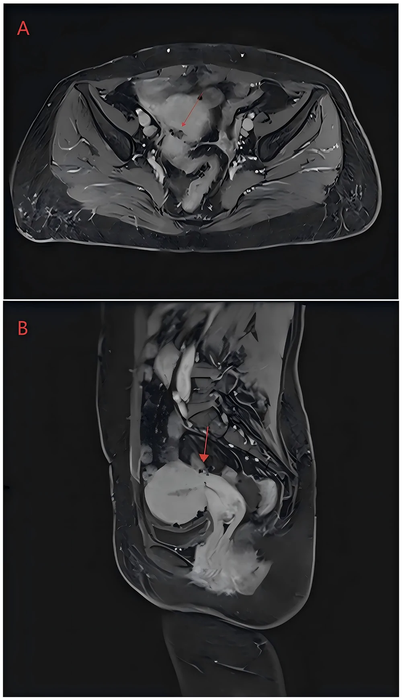
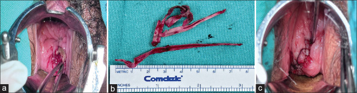
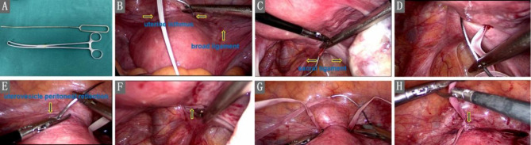

578 — Bán khâu qua ngả bụng (TAC) & xử trí thất bại bán khâu qua âm đạo / Transabdominal cerclage (TAC) and failed vaginal cerclage
Tags: pattern:suy-co-tu-cung pattern:ban-khau pattern:sinh-non vung:co-tu-cung vung:tieu-khung protocol:MRI-tieu-khung protocol:sieu-am-dau-do
Mức chắc chắn (certainty): tổng hợp y văn (literature synthesis) — tổng hợp từ nghiên cứu mở CC BY/CC BY-NC-ND (Abdallah Future Sci OA 2023; Kuang BMC Pregnancy Childbirth 2024; Hulshoff AOGS 2025; Fan Front Reprod Health 2026; van der Krogt BJOG 2026; Malik Clin Case Rep 2026; Hansen AOGS 2026; Paredes Gynecol Minim Invasive Ther 2024; Tang Int J Womens Health 2026), có ca nguyên văn minh họa (Malik 2026; Paredes 2024). Không có ca nguyên văn riêng của nhóm.
1. Tổng quan bệnh học – cơ chế hình ảnh
- Suy cổ tử cung (cervical insufficiency): cổ tử cung mở không đau ở tam cá nguyệt 2, không co tử cung, dẫn tới thai lưu/sinh cực non 14–24 tuần. Tần suất 0,1–2% thai kỳ; không có tiêu chuẩn vàng — chẩn đoán dựa tiền sử + siêu âm + khám.
- Vì sao TAC hiệu quả hơn TVC ở nhóm thất bại: khâu qua âm đạo (McDonald/Shirodkar) đặt chỉ quanh cổ tử cung tại/ngay trên lỗ trong, nên bị giới hạn bởi chiều dài cổ tử cung còn lại. TAC đặt dải băng tại eo tử cung – chỗ nối thân–cổ, 2–3 cm trên lỗ trong, phía trong động mạch tử cung, sau dây chằng rộng, trên dây chằng tử cung–cùng → chặn trực tiếp lực mở của eo tử cung, không phụ thuộc cổ tử cung ngắn/đã cắt.
- TẠI SAO hình ảnh cần thiết:
- Siêu âm đầu dò âm đạo (TVUS) là chuẩn đo chiều dài cổ tử cung (cervical length – CL): bàng quang rỗng/không quá căng, đo 3 lần lấy trị số ngắn nhất, từ lỗ trong đến lỗ ngoài; CL < 25 mm trước 24 tuần là ngưỡng "cổ tử cung ngắn"; < 10 mm + funneling/sludge là nguy cơ rất cao. Sau khâu, TVUS kiểm tra vị trí dải băng và hình phễu.
- MRI tiểu khung T2 phân biệt dải băng (band) tín hiệu rất thấp với mô xơ; phù/viêm quanh cổ tử cung T2 sáng; đường rò (fistula) là đường T2 sáng có thành ngấm thuốc; áp-xe có DWI hạn chế. MRI hữu ích khi đau chậu mạn, chảy dịch âm đạo, nghi xói mòn/di trú dải băng — những biến chứng có thể xuất hiện nhiều năm sau mổ.
- CT/HSG ít dùng; soi ổ bụng là "chuẩn vàng" đánh giá vị trí dải băng khi có biến chứng.
- Ngưỡng định lượng đáng nhớ:
- CL < 25 mm trước 24 tuần = chỉ định siêu âm; < 10 mm** hoặc **phễu > 50% = nguy cơ sinh non rất cao.
- TAC mở (87 thai): thai sống 92%, tuổi thai trung vị 37,3 tuần, 92% ≥ 34 tuần (Hulshoff 2025).
- LCC vs TVC sau dính buồng tử cung: đẻ đủ tháng 89,4% vs 71,2%; sinh non < 34 tuần 9,1% vs 20,2%; sống sơ sinh 98,5% vs 90,4%; nhiễm trùng 3,0% vs 10,6%; tuột chỉ 1,5% vs 9,6%; rách cổ tử cung 1,5% vs 5,8% (Fan 2026).
- 125 thai sau TAC: 6,4% sinh < 32 tuần; tiền sử cắt cổ tử cung (trachelectomy) là yếu tố nguy cơ mạnh; CL tam cá nguyệt 1 19,3 mm vs 33,8 mm ở nhóm thất bại (van der Krogt 2026).
- Biến chứng muộn: 3/203 (1,5%) phải tháo dải băng vì đau/xói mòn; chất lượng sống tương đương nhóm không đặt (Hansen 2026).
- Cơ chế biến chứng: dải băng là vật lạ không tan → có thể di trú/xói mòn qua cổ tử cung vào âm đạo, bàng quang, trực tràng, gây chảy máu, tiết dịch, rò, đau; chẩn đoán muộn vì triệu chứng mơ hồ. Rò trực tràng–tử cung sau xói mòn dải băng là biến chứng nặng, cần MRI và mổ.
2. Mẫu hình + chẩn đoán phân biệt theo vị trí (gamut)
- Mẫu hình cửa vào: thai phụ 14–24 tuần, cổ tử cung mở không đau, phễu lỗ trong, hoặc tiền sử ≥ 1 thai lưu/sinh cực non tam cá nguyệt 2; khám không có cơn co, không nhiễm trùng.
- Gamut theo chỉ định khâu:
- Theo tiền sử (history-indicated): ≥ 1 thai lưu/sinh non tam cá nguyệt 2 không rõ nguyên nhân; đặt 12–14 tuần (TVC).
- Theo siêu âm (ultrasound-indicated): CL < 25 mm trước 24 tuần (đặc biệt có tiền sử sinh non).
- Theo khám (exam-indicated/rescue): cổ tử cung đã mở, màng ối phồng nhưng chưa vỡ, chưa nhiễm trùng → cân nhắc khâu cứu vãn.
- TAC: thất bại TVC (thai lưu/sinh non < 28 tuần dù đã khâu), cổ tử cung ngắn/đã cắt (cone, trachelectomy), dị dạng Müller, rách cổ tử cung nặng, hoặc không thể đặt TVC vì giải phẫu.
- Gamut theo kỹ thuật:
- TVC McDonald: mũi khâu túi ví quanh cổ tử cung; Shirodkar: bóc niêm mạc, khâu cao hơn, có thể để lại qua ngả âm đạo.
- TAC mở (laparotomy): đặt dải băng tại eo tử cung; kinh điển, hiệu quả cao, xâm lấn hơn.
- LCC (laparoscopic cervicoisthmic cerclage): nội soi 4 trocar, đặt dải Mersilene 5 mm tại eo tử cung, 2–3 cm trên lỗ trong, trong động mạch tử cung, sau dây chằng rộng; ít máu, hồi phục nhanh.
- Robot-assisted: tương tự LCC, phù hợp ca dính/giải phẫu phức tạp.
- Trans-broad-ligament / needle-free: đường xuyên dây chằng rộng hoặc không dùng kim xuyên cổ tử cung — ít tổn thương mạch máu hơn nhưng kỹ thuật khó.
- Gamut theo biến chứng:
- Sớm: chảy máu (động mạch tử cung), tổn thương bàng quang/niệu quản, nhiễm trùng, đau.
- Muộn: xói mòn/di trú dải băng (âm đạo, bàng quang, trực tràng), rò, đau chậu mạn, vô sinh do dính, sinh non dù đã TAC (6,4% < 32 tuần), vỡ tử cung (hiếm).
- Gợi nhớ "SHORT": Short cervix (< 25 mm), History (thai lưu tam cá nguyệt 2), Operation (cone/trachelectomy), Refractory TVC, Trouble anatomy (dị dạng/rách).
3. Bảng so sánh phân biệt (ma trận đối chiếu)
| Thực thể (entity) | Hình ảnh điển hình (US/MRI) | Chốt vào (rule-in) | Chốt loại (rule-out) | Gợi ý xác nhận |
|---|---|---|---|---|
| TVC (McDonald/Shirodkar) | TVUS: chỉ quanh cổ tử cung, CL đo được; phễu lỗ trong; chỉ không thấy trên MRI | Tiền sử đặt chỉ qua âm đạo + chỉ quanh cổ tử cung + CL còn đo được | Cổ tử cung đã cắt/ngắn < 5 mm, không đặt được chỉ → không TVC | Khám âm đạo; TVUS |
| TAC/LCC | Dải băng tín hiệu thấp tại eo tử cung, 2–3 cm trên lỗ trong; không có chỉ ở cổ tử cung | Vị trí eo tử cung + tiền sử mổ bụng/nội soi + không thấy chỉ âm đạo | Dải băng quá thấp/quá xa lỗ trong → kỹ thuật sai, nguy cơ thất bại | Nội soi/CT; TVUS khó thấy |
| Khâu cứu vãn (rescue) | Cổ tử cung mở 2–4 cm, màng ối phồng, không vỡ; TVUS thấy phễu | Màng ối còn nguyên + không nhiễm trùng + thai còn sống | Vỡ ối, viêm màng ối, thai lưu, dị tật nặng → không khâu | Khám + TVUS + CRP/BCA |
| Không khâu/theo dõi | CL ngắn nhưng không có tiền sử, không phễu; thai ổn | CL 25–30 mm, không phễu, không tiền sử | CL < 25 mm + tiền sử sinh non → nên khâu | TVUS lặp 1–2 tuần |
| Xói mòn dải băng | Dải băng xuyên qua cổ tử cung/âm đạo, mô hạt quanh; MRI: đường hầm T2 sáng | Nhìn thấy dải băng lộ + chảy máu/dịch âm đạo kéo dài | Không thấy dải băng, chỉ viêm cổ tử cung → điều trị nội khoa | Khám + MRI; nội soi |
| Rò trực tràng–tử cung | MRI: đường rò T2 sáng từ trực tràng đến tử cung, thành ngấm thuốc | Đường rò + khí/dịch trong tử cung + tiền sử xói mòn | Chỉ dày thành trực tràng do viêm → không rò | MRI + soi trực tràng |
| Sinh non dù TAC | TVUS: CL ngắn dần, phễu, sludge; thai tụt thấp | Tiền sử trachelectomy + CL tam cá nguyệt 1 < 20 mm | CL ổn định > 35 mm, không phễu → nguy cơ thấp | TVUS hằng tháng |

Nội soi: (a) dải băng Mersilene được đặt quanh eo tử cung; (b) kiểm tra sau khi cố định — dải băng nằm trên eo, trong động mạch tử cung. Nguồn: Paredes J et al., Gynecol Minim Invasive Ther 2024, PMC11192274 Fig. 2, CC BY-NC-SA 4.0 (nguyên bản).Phân biệt "thất bại TVC" với "không đặt được TVC"
- Thất bại TVC: đã đặt chỉ nhưng vẫn thai lưu/sinh non < 28 tuần; nguyên nhân có thể do nhiễm trùng, chỉ tuột, chỉ quá thấp, cổ tử cung tiếp tục ngắn. Chỉ định TAC ở thai kỳ sau, không phải đặt lại TVC ngay.
- Không đặt được TVC: cổ tử cung quá ngắn/đã cắt (cone, trachelectomy), rách nặng, dị dạng — TAC là lựa chọn thay thế, không phải "thất bại".
4. Protocol chụp + kỹ thuật & theo dõi
- Trước thủ thuật:
- TVUS đo CL (bàng quang rỗng, 3 lần) + khám loại trừ nhiễm trùng âm đạo/cổ tử cung; cấy dịch âm đạo nếu có triệu chứng.
- MRI tiểu khung khi nghi dị dạng tử cung, u xơ/cổ tử cung ngắn bẩm sinh, hoặc đau chậu mạn sau mổ cũ.
- Tư vấn mổ lấy thai cho các thai kỳ sau (dải băng không tháo trước chuyển dạ); tư vấn nguy cơ xói mòn, nhiễm trùng, sinh non dù đã TAC.
- Kỹ thuật TAC/LCC (các mốc số):
- Dải Mersilene 5 mm, kim thẳng/không kim tùy kỹ thuật.
- Đặt tại eo tử cung, 2–3 cm trên lỗ trong, phía trong động mạch tử cung, sau dây chằng rộng, trên dây chằng tử cung–cùng.
- Thắt nút phía trước, để 2 đầu ~3 cm; kiểm tra không chèn niệu quản/bàng quang.
- LCC 4 trocar; thì mổ tham khảo 85 phút, mất máu 30 mL, ra viện ngày hôm sau (Malik 2026).
- Sau mổ: nghỉ 6 tuần (pelvic rest), giảm đau 5 ngày; hỗ trợ sinh sản khởi động lại sau 3 tháng; hẹn TVUS + khám trước khi mang thai.
- Theo dõi thai: TVUS hằng tháng 12–34 tuần (CL, phễu, sludge); nếu CL < 25 mm/funneling dù đã TAC → nhập viện, corticoid, progesterone, cân nhắc can thiệp; không tháo dải băng trừ khi nhiễm trùng/xói mòn.
- Sinh: mổ lấy thai 37–39 tuần (hoặc theo chỉ định sản khoa); giữ dải băng cho thai sau nếu còn nhu cầu sinh sản; nếu không, có thể tháo khi mổ.
- Xử trí thất bại TVC trong thai kỳ hiện tại:
- Màng ối phồng nhưng chưa vỡ, chưa nhiễm trùng, thai 16–24 tuần → khâu cứu vãn (đẩy màng ối lên, khâu McDonald/Shirodkar) ± kháng sinh, corticoid.
- Vỡ ối, viêm màng ối, thai lưu, dị tật nặng → không khâu, tư vấn, kháng sinh/corticoid theo tuổi thai, chuyển dạ.
- Sau một lần thất bại → hoạch định TAC trước thai kỳ sau, không lặp TVC vô hạn.
- Xử trí xói mòn dải băng: khám thấy dải băng lộ → MRI đánh giá độ xuyên (âm đạo/bàng quang/trực tràng); tháo dải băng + khâu lại nếu còn nhu cầu sinh sản; rò trực tràng–tử cung → mổ sửa rò ± tái đặt TAC.
flowchart TD
A[Thai phụ 14-24 tuần, cổ tử cung mở không đau] --> B{Tiền sử thất bại TVC hoặc cổ tử cung không thể khâu?}
B -->|Có| C[TAC/LCC trước thai kỳ sau]
B -->|Không| D{CL dưới 25 mm hoặc phễu?}
D -->|Có| E[Khâu TVC theo siêu âm]
D -->|Không| F[Theo dõi TVUS 1-2 tuần]
E --> G{Sau khâu: màng ối phồng, nhiễm trùng?}
G -->|Không| H[Theo dõi + progesterone]
G -->|Có| I[Khâu cứu vãn nếu chưa vỡ ối]
I --> J[Thai kỳ sau: hoạch định TAC]
C --> K[TVUS hằng tháng 12-34 tuần]
K --> L{CL dưới 25 mm/funneling?}
L -->|Có| M[Nhập viện, corticoid, cân nhắc can thiệp]
L -->|Không| N[Mổ lấy thai 37-39 tuần]
5. Biến thể bình thường & cạm bẫy
- Đo CL sai: bàng quang căng, đầu dò ấn mạnh, đo một lần, hoặc đo khi có cơn co → CL giả ngắn. Đo 3 lần, bàng quang rỗng, không ấn; ghi rõ funneling/sludge.
- Khâu rồi vẫn sinh non: TAC không sửa được nhiễm trùng, đa thai, bất thường thai; 6,4% vẫn sinh < 32 tuần, nhất là tiền sử trachelectomy — không hứa "khâu là giữ được thai".
- Dải băng quá thấp/quá xa lỗ trong → mất tác dụng; quá ra ngoài → nguy cơ tổn thương động mạch tử cung/niệu quản. Kiểm tra niệu quản và mạch đập trước khi thắt.
- Xói mòn có thể biểu hiện như "viêm âm đạo tái phát" nhiều năm sau mổ: chảy dịch, ra máu sau giao hợp, đau — khám tìm dải băng, đừng chỉ đặt thuốc.
- Rò trực tràng–tử cung/bàng quang có thể là hậu quả xói mòn dải băng; MRI T2 + soi trực tràng/bàng quang để xác định.
- Không cho sinh ngả âm đạo khi còn TAC: nguy cơ rách cổ tử cung/vỡ tử cung; mổ lấy thai theo kế hoạch.
- Khâu cứu vãn không phải cho mọi ca: nếu đã vỡ ối/viêm màng ối thì khâu làm tăng nhiễm trùng, không cải thiện kết cục.
- Đa thai: TVC không chứng minh có lợi, có thể có hại; TAC/LCC chỉ nên cá thể hóa sau tư vấn đa chuyên khoa (Malik 2026).
6. Tự lượng giá — Blind Quiz
Ca 1 — Thai phụ 29 tuổi, song thai IVF, tiền sử đặt McDonald 14 tuần với CL 36 mm nhưng mất cả hai thai ở 24 tuần. Siêu âm lúc nhập viện: đọc hình.

- Hỏi: dấu hiệu chính? Chẩn đoán? Vì sao TVC thất bại dù CL ban đầu 36 mm? Bước tiếp theo?
Bấm để hiện đáp án (findings + chẩn đoán)
- Dấu hiệu: cổ tử cung xóa gần hết, lỗ trong giãn rộng, màng ối phồng vào ống cổ tử cung; không còn chiều dài cổ tử cung bảo vệ.
- Chẩn đoán: suy cổ tử cung nặng — TVC đã thất bại; CL ban đầu bình thường không bảo đảm vì đa thai tăng lực cơ học + có thể nhiễm trùng/nhiều yếu tố.
- Bước tiếp theo: nếu chưa vỡ ối, chưa nhiễm trùng, thai còn sống → hội chẩn khâu cứu vãn ± kháng sinh/corticoid; nếu đã vỡ ối/viêm màng ối → không khâu, xử trí sinh non. Thai kỳ sau: hoạch định LCC/TAC trước thụ thai.
- Nguồn: Malik S et al., Clin Case Rep 2026, PMC13240230 Fig. 1, CC BY-NC-ND 4.0 (nguyên bản).
Ca 2 — Nữ 34 tuổi, TAC 3 năm trước, nay ra dịch âm đạo lẫn máu tái diễn. MRI tiểu khung: đọc hình, tìm biến chứng.

- Hỏi: mũi tên đỏ chỉ gì? Chẩn đoán? Liên quan đến TAC thế nào? Hướng xử trí?
Bấm để hiện đáp án (findings + chẩn đoán)
- Dấu hiệu: (A) trục ngang và (B) dọc — đường rò (fistula tract) T2 sáng, thành ngấm thuốc, nối trực tràng – tử cung (mũi tên đỏ); có thể thấy dải băng xuyên qua thành trực tràng.

Dải Mersilene xói mòn lộ ra, được tháo và kiểm tra lỗ trong cổ tử cung sau tháo. Nguồn: Paredes J et al., Gynecol Minim Invasive Ther 2024, PMC11192274 Fig. 1, CC BY-NC-SA 4.0 (nguyên bản).- Chẩn đoán: xói mòn dải băng Mersilene vào trực tràng, biến chứng rò trực tràng–tử cung — biến chứng muộn của TAC.
- Xử trí: nội soi/tháo dải băng, sửa rò (mổ hoặc nội soi), kháng sinh; nếu còn nhu cầu sinh sản → cân nhắc đặt lại TAC ở vị trí khác sau khi lành.
- Nguồn: Tang Z et al., Int J Womens Health 2026, PMC13525773 Fig. 2, CC BY-NC 4.0 (nguyên bản).
Ca 3 — Nội soi đặt TAC: nhận diện dải băng và mốc giải phẫu. Vì sao phải nằm trong động mạch tử cung?
- Hỏi: (a) và (b) là gì? Dải băng nằm ở đâu? Tai biến cần tránh?
Bấm để hiện đáp án (findings + chẩn đoán)
- (a) Đặt dải băng quanh eo tử cung; (b) kiểm tra sau cố định — dải băng nằm trên eo, phía trong động mạch tử cung, không chèn ép mạch.
- Vị trí đúng: 2–3 cm trên lỗ trong, sau dây chằng rộng, trên dây chằng tử cung–cùng, nút phía trước.
- Tai biến: chảy máu động mạch tử cung, tổn thương niệu quản/bàng quang, dải băng quá thấp → thất bại; kiểm tra mạch đập và niệu quản trước khi thắt.
- Nguồn: Paredes J et al., Gynecol Minim Invasive Ther 2024, PMC11192274 Fig. 2, CC BY-NC-SA 4.0 (nguyên bản).
Ca 4 — Các bước LCC "đơn giản hóa": đọc hình và gọi tên mốc.

- Hỏi: (B) các mốc là gì? (C) mũi kim đi qua đâu? Vì sao dùng dải không tan?
Bấm để hiện đáp án (findings + chẩn đoán)
- (B) nếp phúc mạc bàng quang–tử cung (uterovesical fold) và dây chằng rộng (broad ligament); (C) kim xuyên qua eo tử cung, phía trong động mạch tử cung, cách eo 2–3 mm ở bờ bên.
- Dùng dải Mersilene 5 mm không tan vì cần giữ lực lâu dài qua nhiều thai kỳ; dải tan sẽ mất tác dụng trước khi thai đủ tháng.
- Lưu ý: không mở khoang bàng quang–cổ tử cung nếu không cần; tránh kim quá xa vào động mạch tử cung/niệu quản.
- Nguồn: Kuang L et al., BMC Pregnancy Childbirth 2024, PMC11607865 Fig. 1, CC BY-NC-ND 4.0 (nguyên bản).
Bài liên quan chéo
- 573 – Hở cổ tử cung: bán khâu qua ngả âm đạo
- 569 – Sinh non trong song thai
- 566 – Song thai: chorionicity, TTTS & TAPS
- 550 – Thai sớm: sẩy thai & thai ngoài tử cung
- 577 – Theo dõi tái phát ung thư phụ khoa (biến chứng muộn sau điều trị)
- 500 – Tổng quan Vú & Sản Phụ khoa
Ảnh
- Tên file:
578_ban-khau-bung_Modality_SourceID.jpg; nguồn + giấy phép từng ảnh trongimages/CREDITS.md. - Ảnh CC BY-NC-ND/BY-NC-SA giữ nguyên bản, không crop/ghép.
- Không dùng ảnh từ nguồn cấm tải (AuntMinnie chỉ dẫn link).
Không dùng để chẩn đoán độc lập khi chưa có người hướng dẫn.